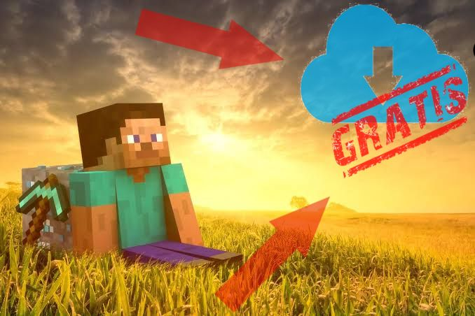
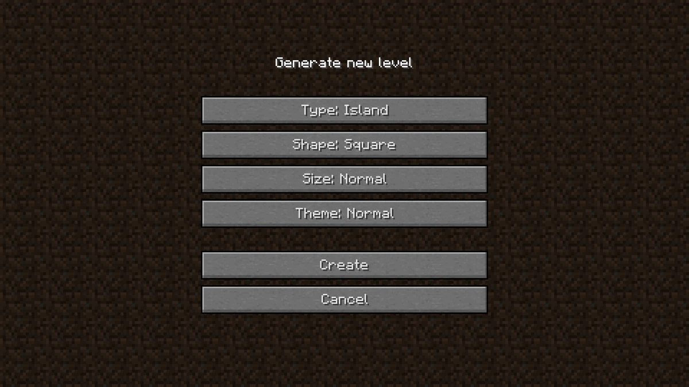
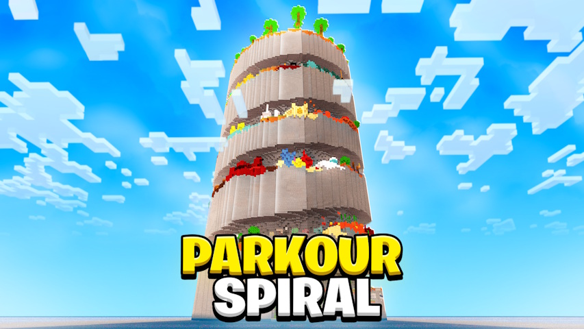
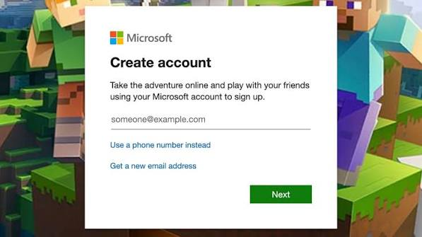
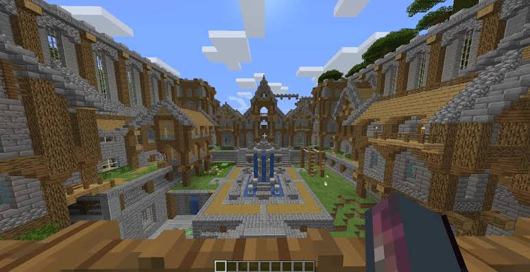
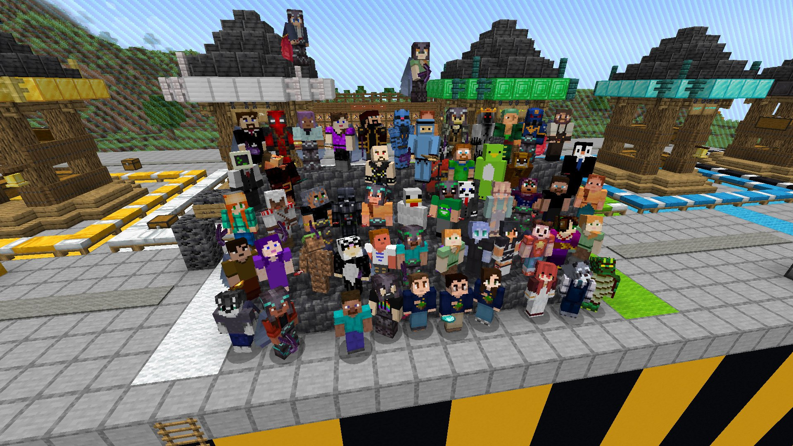

¿Cómo iniciar Git?
AL igual que en minecraft, si queremos jugar, debemos instalar en primer lugar. Será fundamental instalar Git en nuestra computadora, para ello debemos descargarlo desde su página oficial y seguir los pasos de instalación.
Para instalar Git dirigete al siguiente enlace
Descargar Git
¿Cómo iniciar un proyecto en Git?
Una vez instalado Git, podemos iniciar un proyecto de dos maneras: creando un nuevo repositorio o clonando uno existente.
git init
En minecraft, si deseamos crear un nuevo mundo basta con presionar el botón de "Crear MUndo" después de presionar
jugar. De manera similar, crear un repositorio es sumamente fácil, debemos abrir la terminal y navegar
hasta la carpeta donde deseamos crear el proyecto. Luego, ejecutamos el comando git init,
lo que creará un nuevo repositorio vacío en esa ubicación.
Un repositorio vacío es como un mundo nuevo en Minecraft, sin bloques ni estructuras especiales que lo definan.
¿Pero que sucede si queremos trabajar con un repositorio que ya existe?

git clone
A veces vemos mundos o mapas en internet que nos gustan muchisimo, el proceso para poder jugarlos por nuestra propia cuenta es sumamente sencillo, basta con descargar el mapa y colocarlo en la carpeta de "saves" de minecraft. De manera similar, si queremos trabajar con un proyecto que ya existe en GitHub, podemos clonarlo en nuestra máquina local.
Para clonar un repositorio existente, necesitamos la URL del repositorio. Ejecutamos el comando
git clone [URL del repositorio], lo que descargará una copia completa del proyecto en
nuestra máquina local.

¿Cómo iniciar un proyecto en Git Hub?
Si queremos jugar una partida multijugador en Minecraft, es de sentido común que debemos tener una cuenta creada, con un juego cooperativo la diversion es mucho mayor. Simultaneamente, si queremos trabajar con un proyecto en GitHub, debemos tener una cuenta creada en la plataforma.

¿Deseas ir ahora mismo?
Crear cuenta en GitHubUna vez creada nuestra cuenta, esto no nos asegura que juguemos con más opersonas, en Minecraft debemos unirnos a un servidor para conseguirlo; este servidor puede ser público o privado, incluso podemos jugarlo solo aunque presente la opción del cooperativo. En GitHub, ocurre exactamente lo mismo, podemos crear repositorios públicos o privados, y podemos trabajar en ellos solos o con más personas.

